今天分享一篇来自NDSS 2024的文章：
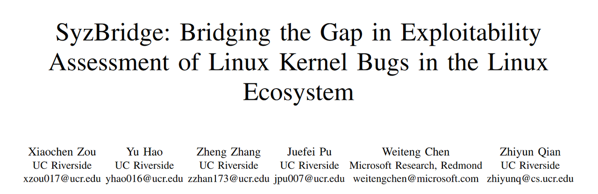
Introduction
持续fuzz技术在Linux内核中的应用导致了大量上游内核bug被发现，但对于这些bugs能否在具体的发行版中被利用却难以确认。因此也促进了bug评估技术(bug assessment techniques)的发展。现在有些比较优秀的自动可利用性评估工具，比如SyzScope做到了一些比较高效的评估检测、KOOBE基于过往不可利用的bugs生成了6个新的可行的漏洞利用。但即便有这些结果，现实中Linux 内核漏洞利用的情况还是很罕见。但作者团队在 Fedora、Ubuntu、Debian 和 SUSE 等发行版中发现了 50 多个可利用的内核漏洞。这种差异促使作者调查原因，which造成了现实世界中较少的漏洞利用数量与评估工具产生的结果数量之间的差距。
本文主要做了以下工作：
- 引入了一种新颖且以前被忽视的内核漏洞可利用性评估维度。该维度解决了下游漏洞可触发性问题，并为现有的可利用性工具配备了在实际下游发行版上工作的新功能。
- 开发了 SyzBridge，这是一个自动化系统，旨在通过对原始上游 PoC 进行调整来提高在下游发行版上重现漏洞的可能性。系统成功重现了 61% 以上的漏洞，其中许多不需要 root 权限。源码在https://github.com/seclab-ucr/SyzBridge
- 系统旨在促进并集成到现有的可利用性评估tool pipe中。pipeline目前揭示了下游内核上 53 个可能可利用的漏洞，而在这之前已知的漏洞只有 5 个。
Background
Linux kernel的大致描述相信读者应该比较熟悉了，我们直接从背景的Syzbot部分开始讲起。
Syzbot
syzbot 是由 Google 运营的持续性内核模糊测试平台，它主要针对 Linux mainline及其大部分模糊测试实例。
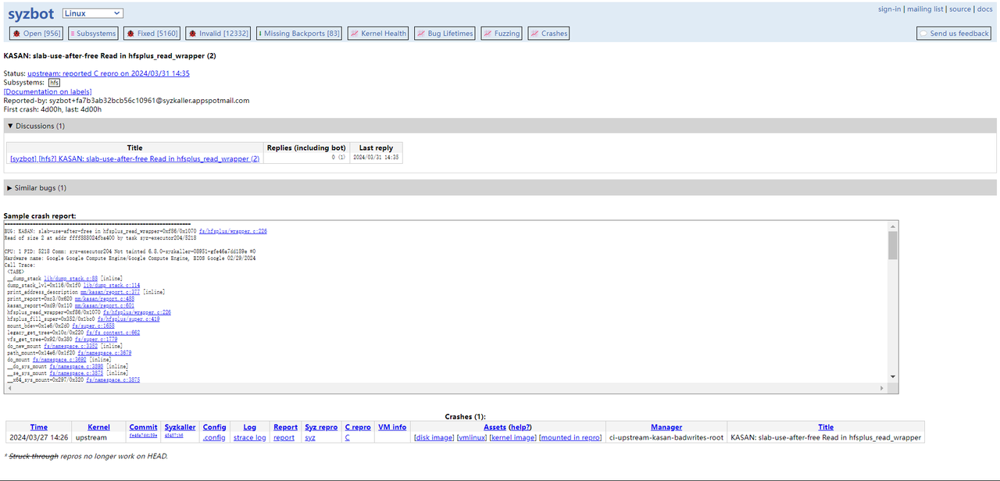
syzbot跑出来的一个crash例子大概长上面这样。https://syzkaller.appspot.com/upstream
syzbot 的运作方式：它每天从公共 git 存储库编译最新的内核（mainline或 LTS），并对它进行大约一天的模糊测试然后重复。它可以有效地发现开发过程中引入的错误。为了实现高覆盖率，在编译内核时，syzbot 会在配置文件中启用最常用的选项（例如，translating into kernel features），以应对某些冲突。它还启用了许多与清理程序相关的选项来检测内核并促进运行时的错误检测。syzbot 始终使用以 root 用户身份运行对内核进行模糊测试，从而允许模糊器发现需要特权才能触发的错误。
Bug exploitability
漏洞的可利用性取决于高危原语，比如UAF、arbitrary free、double free这种。
现有的一些可利用性评估工具表现如下：KOOBE依靠发现的高风险原语（例如越界写）来覆盖关键内核数据，从而生成具体的漏洞利用。SyzScope 通过将低风险原语（例如内存读取和其他一些非安全原语）提升为高风险原语来评估错误可利用性。这两种工具都取得了显著的成果。KOOBE 成功地从 4 个 Linux 上游错误中生成了 6 个新漏洞，SyzScope 将 1,173 个上游低风险bug中的 183 个提升为高风险bug。
但这些做的都不够。
Motivating Example
举一个例子，下图这个漏洞是syzbot报的一个上游linux内核洞，但前面提到的两种工具都没有报告出它在下游的可利用性，而作者的工具SyzBridge成功检测出了它的潜在可利用性，而且获得了linux社区的认可。
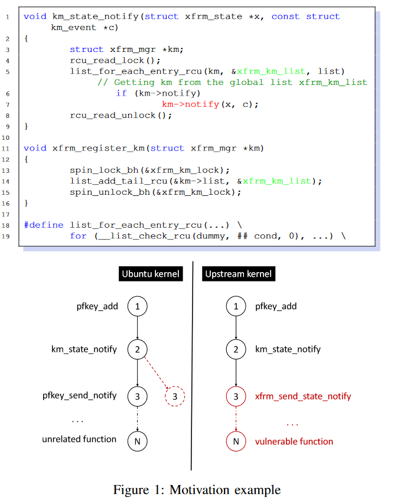
对于这个漏洞的详细描述如下：
该漏洞发生在内核netfilter中。图 1 中的 km_state_notify 是调用相应 netfilter 的关键函数。此调用通过 xfrm 管理器 km 在第 7 行发生。 km 的值在第 5 行从全局链表 xfrm_km_list 分配。请注意，list_for_each_entry_rcu 迭代全局链表 xfrm_km_list，并调用正确的 notify() 函数。然而，这个全局链表在被km_state_notify使用之前必须被初始化。 xfr_register_km 函数中的第 14 行描述了初始化过程。在上游内核中，当 xfrm_user 模块加载时，在内核启动过程中会自动调用此初始化函数。另一方面，Ubuntu内核的默认配置并没有加载xfrm_user模块，导致初始化功能无法完成，最终导致该bug无法复现。如图 1 所示，km_state_notify() 在第 7 行调用间接调用。如果我们将 Ubuntu 的跟踪与上游内核的跟踪进行比较，我们会注意到被调用者是不同的。这是因为Ubuntu内核此时只有默认的notify模块pfkey，导致它调用了常用函数pfkey_send_notify()。 SyzBridge 提取跟踪并自动定位不匹配的跟踪节点（节点 3）并揭示丢失的函数 xfrm_send_state_notify()。 SyzBridge找到对应的模块为xfrm_user，并通过modprobe加载该模块在Ubuntu上触发Bug，最终PoC成功触发Bug。
然而，通过 modprobe 加载模块的标准方法需要 root 权限，这使得利用漏洞变得不切实际。 SyzBridge 使用一种独特的技术，利用内核内部机制从非特权用户无缝加载目标模块。除了降级模块加载权限外，SyzBridge 还通过识别内核安全检查和应用用户命名空间来自动降级使用网络模块的权限。因此，现在可以在 Ubuntu 上以普通权限成功触发该漏洞。（这些在后文会讲到）
EXPLORATORY EXPERIMENT
这部分的实验是不使用SyzBridge的时候，作者去做实验去下游发行版尝试复现Syzbot报出的bug，来得出一些结论说明这些bug为什么不能在下游发行版被利用。
A. Dataset & Experiment Setup
Syzbot bugs
作者选择了Syzbot汇报的bug中的KASAN类型的225 个bug和对应的PoC，KASAN这个类型是 Kernel Address Sanitizer 的缩写，也就是检测内存错误。还有5个被证明可利用的CVE，其中3个CVE是上游linux内核的KASAN类型的，另外 2 个也是 KASAN bug，但在其他内核（例如LTS）中，而且也有对应的PoC。因此一共有230个bug被选择。
Downstream distros
使用四种流行的发行版作为数据集：Ubuntu、Fedora、Debian 和 Suse。
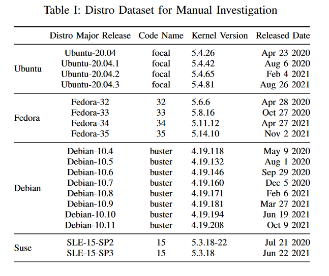
发行版release版本的选择和漏洞被报告的时间有关。选择的条件是：
(1)下游内核尚未修复该bug
(2)bug被发现时，主要版本对应的分支仍under support
Experiment setup
为了捕获 KASAN 错误，在内核配置中启用了 CONFIG_KASAN。还启用了一些其他内核调试功能，例如 CONFIG_FAULT_INJECTION、CONFIG_DEBUG_KERNEL 等，因为它们也被 syzbot 使用。除此之外，保留其余选项与原始配置中的相同，以使编译后的内核尽可能接近最终用户版本。
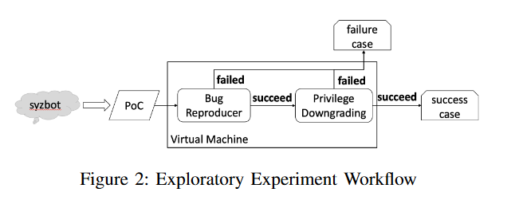
具体的实验步骤如figure2所示，还是比较简洁明了的这里就不过多描述。
B. Exploratory Experiment Results
在针对 43 个发行版运行 230 个 PoC 后，作者发现所有发行版中只有一小部分bug可由 root 用户触发——Ubuntu、Fedora、Debian 和 Suse 总共 230 个中分别有 55、58、33 和 29 个。此外，只有 2、3、2 和 1 (0.4% - 1.3%) 是由非特权用户直接触发的。源自syzbot的5个CVE中，有4个是由root触发的，没有一个是由非特权用户触发的。这个结论说明现在Syzbot报出的很多bug在下游的可利用性确实很低，于是接下来就是手动去分析为什么会这么低。
C. Manual Investigation Dataset & Setup
作者随机挑选了 50 个无法在目标发行版上重现或只能由 root 用户重现的 KASAN bug。然后根据bug的汇报时间等选择了对应待测试的下游发行版。50(bug) * 4(distros)，总共生成了200个 bug/发行版对。
首先在目标发行版上以 root 用户身份运行 PoC。如果bug无法在目标发行版上重现，作者会手动分析此失败的根本原因。对于那些可以通过 root 重现的bug，以非特权用户身份重新运行 PoC，再次观察可触发性。如果非特权用户无法触发该bug，将开始另一次手动分析以了解权限要求。
D. Manual Investigation Results
手动分析的结论这一块非常有趣而且作者讲的也很比较透彻。
在setup阶段生成的200个配对中，有120个无法重现，因为对应的buggy commit（也就是导致漏洞产生的commit代码）没有在downstream中存在（前面我们提到了上游漏洞的成因大部分是因为各种维护者提交的commit代码里含有可能导致bug的代码段，即开发引入的错误），也就是只commit到了上游linux内核，而没有在下游内核中出现。这个原因其实是致命的，因为你看人家代码根本都不存在所以也根本不可能触发这个bug。
剩下的80个配对中，有18个成功触发了（也就是前面提到的只能由root触发的）。剩下62个依旧失败。于是作者开始分析这62个失败的原因和这18个只能由root触发的原因。
1) Necessary logic missing
作者发现 62 对中有 41 对失败，因为缺少必要的逻辑（例如函数）。例如，存在 buggy commit，但 buggy commit 涉及的函数未在下游内核中编译。请注意，这与 “buggy commit不存在” 的情况不同（之前已经过滤了）。然而，含义是相同的——无法通过调整PoC来触发该错误。也就是说依旧致命。
2) Code context change
62 对中有 1 对由于下游内核代码上下文更改而失败。具体来说，下游内核进行了上游中不存在的检查，因此 PoC 需要稍微调整（比如更改常量）才能触发bug。在本文中，作者故意将此类案例排除在范围之外，因为：（1）此类案例的数量有限（在稍后的更大规模的实验中也得到了支持）。 (2) 这种代码上下文变化可以通过使用细粒度程序分析技术的先前解决方案来解决。
3) Environment Requirements Unsatisfied
在剩下的20 对中，作者发现根本原因是由于我们认为下游操作系统中的环境差异造成的。作者将它们分为三类环境差异。
R1: Preparation steps failing.
3 对由于目标发行版中缺少调试设备而失败。比如/dev/raw-gadget是 Linux USB Gadget 子系统的低级接口。在 syzbot 中，此类准备步骤一般出现在 PoC 的特殊标记部分（开头），因此易于识别。它不应该包含在生产发行版内核中，作者在编译下游内核时并没有启用它。当 PoC 尝试在下游操作系统上打开此设备时，它总是会失败并终止。对于上游内核来说这不是问题，因为此类调试功能始终在内核配置中启用。
R2: Distro background noises
有 13 对由于发行版存在background noises而触发失败。这些噪音来自一直在后台运行的daemon进程，例如系统服务。因为这些下游操作系统被设计为更具有功能性。相比之下，syzbot 测试的上游 Linux 功能最少，很少有长时间运行的默认进程。这些后台进程会导致两种类型的问题，从而阻止触发错误。
- PoC 所需的发行版资源被其他进程占用。例如，Loop设备为要安装的文件系统映像（例如 .iso 映像）提供块设备。作者观察到发行版映像上的循环设备通常被其他进程占用。
- 条件竞争（条件竞争这一块的分析笔者认为非常有意思）。条件竞争本身是触发漏洞的一种方式，上游的linux内核本身非常brief，后台噪音比较少，所以触发条件竞争也比较容易。可能跑一次测条件竞争的PoC就能测出来，但这个表现会让fuzzer认为：“哎我这个跑一次触发条件竞争了，那肯定你这个PoC不对，你看人家条件竞争都小概率事件，你怎么能这么大概率成功呢~”。所以Syzbot就不会把这个确实含有条件竞争漏洞的PoC当作是正确的。导致了误会的产生，所以导致这个漏洞不让人发现。（笔者注：但这一块我有点疑惑，或许是它本身有趣的点：作者前面提到他选取的是Syzbot报出来的洞，在下游进行测试，但这里这个条件竞争的洞如果要按照作者的说法选取的话，是不是应该从Syzbot报test fail的地方选取呢~，当然也可能是我没理解对，如果读者有想法欢迎留言提出~）
R3: Necessary kernel modules not loaded
有 10 对失败，因为该bug需要编译并包含在内核中的特定模块，但默认情况下不会加载 。注意，这与之前的原因“缺少必要的逻辑”不同，之前那个原因是根本不存在或没编译必要的代码，导致没有机会触发错误。但如果模块包含在内核中但尚未加载，那么通过一些手段仍然有机会来加载模块并触发错误。换句话说，下游内核的真正攻击面需要考虑可按需加载的模块，尤其是那些可由非特权用户加载的模块。
4）Privilege Requirement
为了了解root权限如何在bug触发过程中发挥作用，作者调查了阻止非特权用户成功触发错误的根本原因。
R4: Kernel security checks
在Linux内核中，每个进程都有自己的cred结构体来代表其权限，安全检查都与该结构体中定义的字段相关。一般来说，有两种常见的检查类型：
第一种检查是uid 和 gid 检查。 uid和gid代表进程运行时的用户id和组id（还有euid和egid等，我们一般将它们称为uid和gid）。在 Linux 中，uid 和 gid 的最高权限级别称为 root（常量为零）。
另一种类型的检查是capability 检查。与 uid 和 gid 相比，capability更细粒度，其中权限被划分为更小的单元，可以为每个进程独立启用或禁用，例如 CAP_NET_ADMIN 赋予进程使用原始套接字的权限。案例研究中的图 3 显示了由于调用进程不具备相应capability而导致 CAP_NET_ADMIN 检查失败的情况。
当 syzbot fuzz上游内核时，PoC 进程以 root 身份运行并被授予所有功能，因此通过这些检查没有问题。然而，由于这些检查，在下游操作系统上使用非特权用户运行此类 PoC 将无法触发该错误。
上述分析的结果如下：
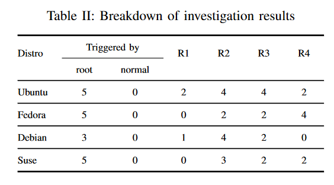
笔者对于manual investigation result的概括
虽然上文我尽量在用好读的写法来描述这个结果分析过程了，但可能他这个分类还是会有点绕，为此我手画了一张草图来帮助读到这里的大家更清晰地概括并理解这个结果分析过程，画的很丑抱歉qwq：
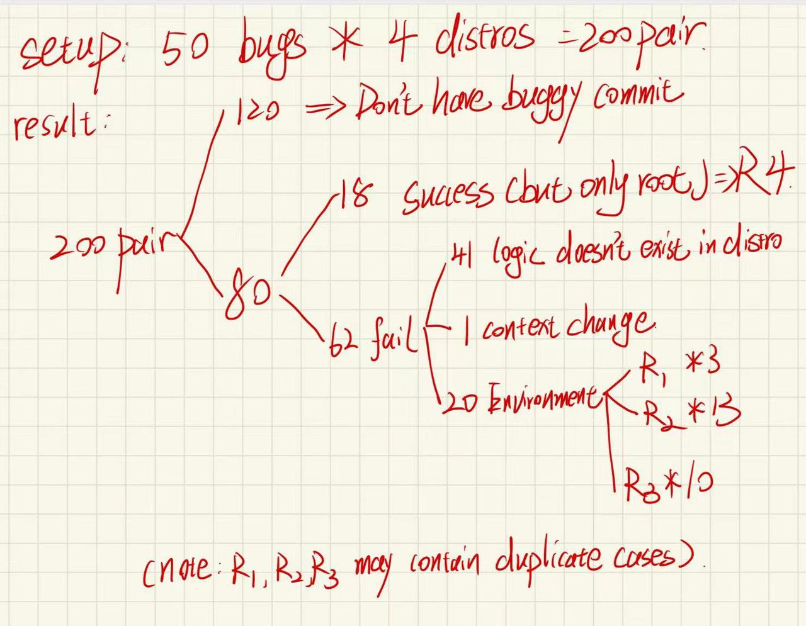
SYZBRIDGE
前面做了这么多铺垫，终于来到了我们作者的工具环节。
前文描述的几个问题中，除了R1~R4，其他都是不可解决的（或者被作者排除在外的Code context change）。
下文的则是针对这些问题，提出了作者的解决方案
A. Environment Adaptation for Failed Preparation Steps.
R1中提到，syzbot PoC 编写了一些准备步骤。这是因为不同的内核功能可能需要额外的设置过程。但并不是每个 PoC 实际上都需要这样的环境，它高度依赖于后续的系统调用实际上是否与相关功能交互。因此，不必要的准备步骤可能会被保留在syzbot给出的PoC中，这类操作在没有此类调试接口的下游操作系统中会失败。为了解决这个问题，作者对准备步骤进行最小化。简言之：迭代地禁用现有的准备步骤，并找到bug触发实际所需的最少步骤。
B. Environment Adaptation for Background Noise
R2中提到，环境噪音主要是对条件竞争洞造成影响。比如一个loop设备对于文件系统的mounting是必要的，而且很早就被其他进程占用了，但会影响bug触发。遇到这种噪声问题的时候，作者的解决办法是强制内核释放占用这个设备的进程，比如使用unmount。然后继续运行poc。
关于有些竞争条件 bug，syzbot 未能识别它，并错误地将 PoC 标记为不可利用（这个我们在前文提到过，还记得吗？）。为了缓解这个问题，作者将每个bug都视为潜在的竞争条件错误。如果 PoC 作为单个进程运行，则启动多个 PoC 进程（即6个，这是syzbot 通常用于竞争条件 bug 的进程数）以使它们相互冲突。此外，将 PoC 调整为始终循环运行，增加了触发成功的机会（timeout 600）。
C. Environment Adaptation for Module Loading
R3中提到下游内核通常由许多单独的可加载内核模块编译而成，因此必须在 PoC 运行之前加载它们。作为 root 用户，其实是可以简单粗暴地强制加载下游所有可用的内核模块作为适配。然而作者选择的方法是pinpoint the exact module，这样就可以尝试在不成为 root 的情况下加载这些模块。
具体做法有以下三种，我们不展开细讲了，可以看名字来大致了解一下
- Pinpointing explicitly dependent but missing modules
- Pinpointing implicitly dependent but missing modules
- Module minimization
D. Privilege Adaptation for Module Loading
用modprobe载入模块的话需要root权限。但还有一种方法让非特权用户通过内核系统调用来加载模块。当调用某些系统调用（例如 socket）时，可以自动加载这些模块。默认情况下，Ubuntu 中不加载 xfrm_user 模块，但非特权用户可以通过 syscall(__NR_socket, 16, 3, 6); 加载。
作者确定了一个名为 request_module() 的关键内部内核函数，该函数本身没有权限要求。内核中分散了数百个 request_module() 调用。手动分析过于繁琐，于是作者在 syzkaller 之上开发了一个引导模糊器来自动生成测试用例，该测试用例可以由非特权用户加载模块。此外作者还利用 MLTA （卢康杰老师的作品https://www-users.cse.umn.edu/~kjlu/papers/mlta.pdf），一种静态分析工具，用于准确解析内核间接调用。
按照上述设置，对三个发行版的最新版本分别进行了为期三周的模糊测试实验，获得的非特权可加载模块结果如下：
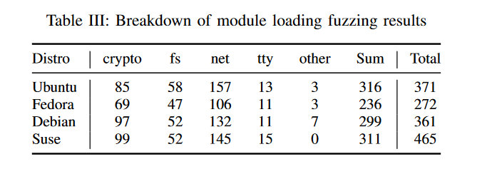
SyzBridge收集非特权模块加载结果后，构建PoC数据库，可以加载相应模块以支持权限适配。
E. Privilege Adaptation for Kernel Security Checks
现代Linux内核具有称为namespace的功能，允许非特权用户动态创建命名空间，并在命名空间内成为特权用户。通过利用命名空间，非特权用户可以绕过安全检查，获取特权，甚至进行特权升级。作者通过对内核进行调整，使得在执行过程中可以准确定位特权检查点，并在必要时以最高特权进行命名空间适应性调整。
EVALUATION
讲完了Syzbridge的各种适应做法之后，我们来看对它的评估。
Experiment Design
对于评估的实验，作者如下设计：
- 设计了两个实验，评估了上游PoC适应到下游内核的效果以及利用SyzScope工具弥合高风险上游漏洞的差距。
- 实验I：评估了上游PoC的适应性。使用了230个上游KASAN漏洞和Ubuntu、Fedora、Debian和Suse的43个下游发行版。每次运行PoC 600秒。使用SyzBridge进行环境相关和特权相关适应性调整，并记录结果。
- 实验II：评估了“可利用性评估”pineline（这个名字好像很绕，但我们不用去管它）。输入 SyzScope 的结果进行了额外的实验，将 183 个看似低风险的bug变成了高风险bug。同时使用了2017年至2022年的所有KASAN写入漏洞。总的来说，该数据集包含 282 个高风险上游bug和 68 个发行版。使用相同的实验设置 - 每次尝试 600 秒，SyzScope 最多 5 小时（1 小时模糊测试和 4 小时符号执行）。
Results of Experiment I
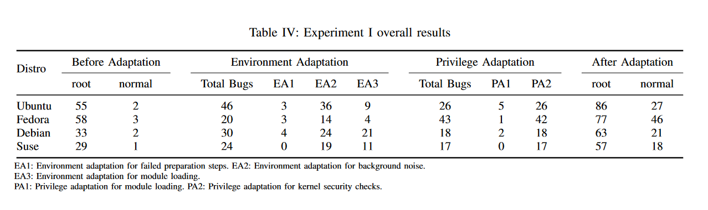
结果如Table IV.在230个漏洞中，Ubuntu、Fedora、Debian和Suse分别触发了55、58、33和29个漏洞。只有2、3、2和1个漏洞（0.4% - 1.3%）直接被非特权用户触发。经过SyzBridge后的最终结果显示，通过root可以触发86、77、63和57个漏洞，平均每个供应商触发27个额外的漏洞，改进了61%。更重要的是，通过非特权用户可以触发27、46、21和18个漏洞，平均每个供应商触发26个额外的漏洞，特权要求降低了1300%。
环境适应性：Ubuntu由于预装了一个名为snap的软件包，导致许多漏洞无法重现。Ubuntu安装snap包时，必须先解压缩然后通过loop设备挂载。由于loop设备数量有限，Ubuntu预装了许多snap应用程序，占用了大部分现有的loop设备，使其他进程（例如PoC）无法访问这些关键资源。Debian和Suse也遇到了相同的问题，因为它们也需要加载loop设备模块。
特权适应性：用于内核安全检查的适应性最常见。许多“受保护”的功能只要启用命名空间，就可以变得可用。对于非特权模块加载的适应性较少常见但仍然有帮助。有些漏洞可能由于环境问题而无法重现，这种情况下只需要环境适应性即可由普通用户重现。
误报情况：SyzBridge运行具体测试用例来重现内核漏洞，因此从设计上理论上不应该有任何误报。然而，由于sanitizer偶尔遇到bugs会误报，这些问题超出了SyzBridge的责任范围，而是sanitizer在这个项目中被正确实施。
未报情况：作者抽样了20个未能在某些下游内核上触发的漏洞。对于每个漏洞，作者在一到三个下游内核中进行调查。经过手动调查，我们发现40个漏洞-发行版对中有36对是TN，表明漏洞在目标发行版中不存在。四个FN例归结为以下两个原因：
- 在规定的时间限制内条件竞争未成功。由于下游操作系统包含比上游更多的用户空间进程和服务，背景噪音更严重，导致难以赢得条件竞争，因此PoC需要更长的重复执行时间。作者对这些问题运行了一个单独的实验，将时间限制延长到24小时，并注意到1个PoC可以在一个小时内成功触发漏洞，另一个PoC在23小时后触发了漏洞。
- 未能提取PoC执行跟踪。作者发现两对未能成功从上游内核获取执行trace。这导致缺失模块分析失败，并进一步影响适应。原因是有时由于内核崩溃，导致执行轨迹部分丢失。可以通过改进 ftrace 收集执行跟踪的方式来克服这个问题。
Results of Experiment II
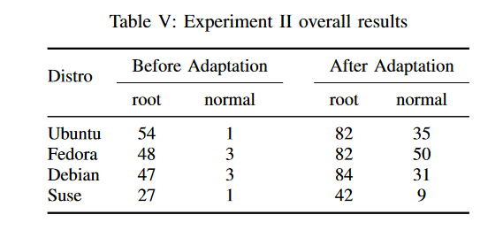
在282个高风险上游漏洞中，平均有44个（15.6%）漏洞可以在至少一个发行版上重现，但只有平均2个（0.7%）漏洞可以在正常权限下重现。SyzBridge的应用显著改善了结果。具体来说，SyzBridge成功适配了额外的28、34、37和15个PoC，成功触发了相应的漏洞，使每个发行版的改进率分别达到51%、70%、78%和56%。SyzBridge还将每个发行版的29个漏洞权限要求降级了，改进了15倍。总共有53个高风险“适用于下游”的漏洞，包括6个CVE。结果表明许多潜在可利用的漏洞被忽视，突出了SyzBridge在漏洞利用评估中的重要作用。有9个漏洞具有控制流劫持原语，16个UAF写漏洞，11个OOB写漏洞和7个双重释放漏洞，都很可能被利用。仅有5个漏洞可以直接由非特权用户触发。而且验证了5个以前未知可利用的漏洞，成功实现特权升级。这展示了SyzBridge在分析漏洞利用性方面的自动化和有效性。
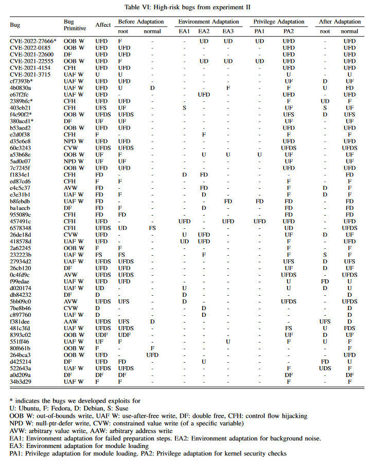
Conclusion
论文阅读笔记部分我们就写到这里了，关于文章后面部分的讨论以及其他章节感兴趣的读者可以去阅读原文
总的来说，作者开发的这个Syzbridge工具的作用是使上游linux内核的bug poc更好地适应下游具体的发行版，也就是大多数用户使用的版本。主要的一些效果就是做了复现所需的权限以及环境、模块等等更好的适配，提高了上游漏洞在发行版中的可利用性，而且也发现了5个之前未知可公开利用的额外bugs。
论文地址：https://www.ndss-symposium.org/wp-content/uploads/2024-926-paper.pdf
如果您喜欢此博客或发现它对您有用，则欢迎对此发表评论。 也欢迎您共享此博客，以便更多人可以参与。 如果博客中使用的图像侵犯了您的版权，请与作者联系以将其删除。 谢谢 ！